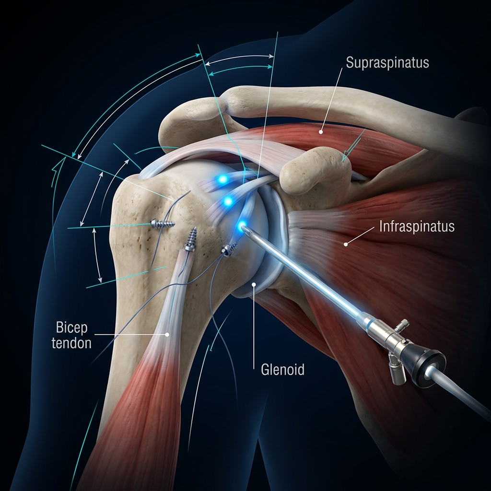
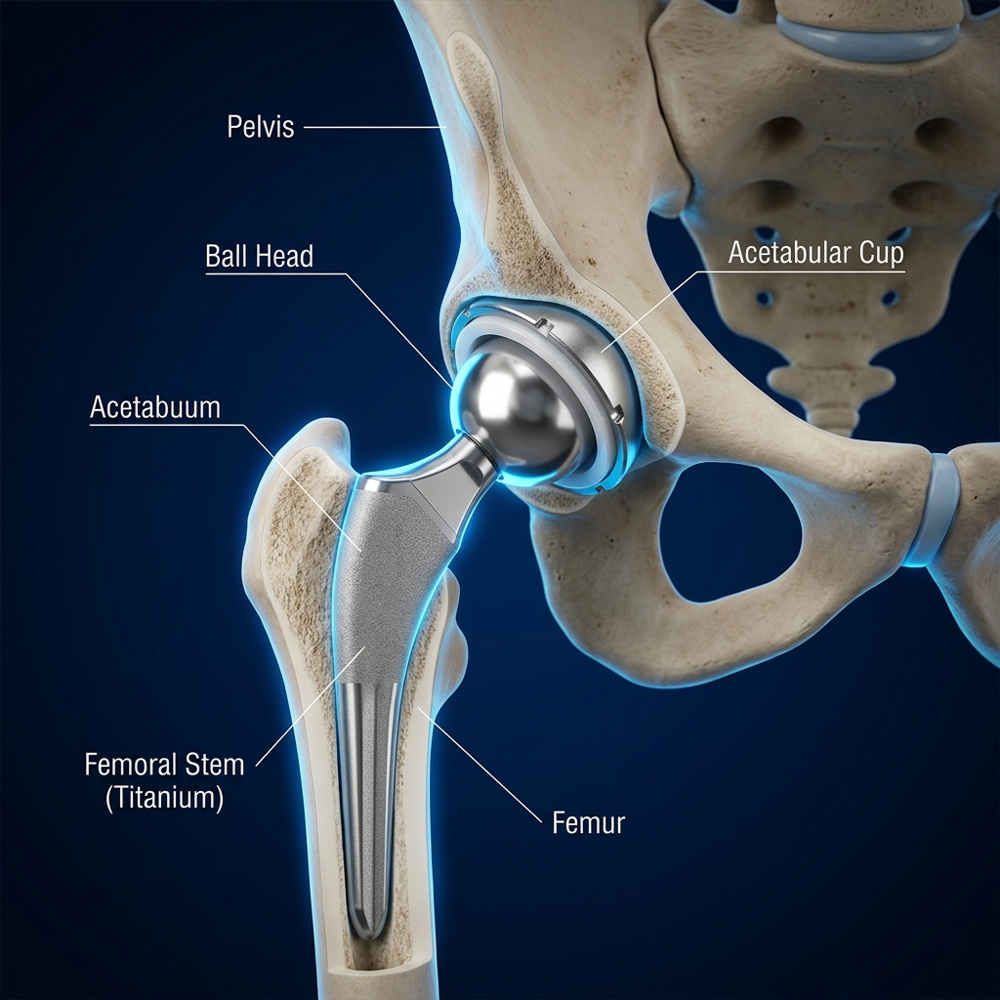

Precision in Motion
Consultant Orthopaedic, Arthroscopy & Sports Injury Surgeon
Restoring joint function and active lifestyles through advanced arthroscopic keyhole surgery. Trained in world-renowned centres across the United Kingdom and Australia.
Restoring Life's Fluidity
Dr. Manish Bansal
Trained at world-renowned centres in the UK, Australia & India since 2000.
Dr. Manish Bansal is a pioneering Orthopaedic Surgeon specializing in advanced keyhole arthroscopy procedures and joint reconstructions. With a strong track record spanning over two decades, he dedicates his practice to restoring optimal range of motion and joint stability for active adults, senior patients, and elite athletes alike.
Having completed advanced fellowships in joint reconstructions in the UK and sports injury care in Australia, Dr. Bansal employs global gold-standard procedures. He frequently contributes as a panelist and guest lecturer at national orthopaedic and arthroscopy forums, sharing developments in micro-surgical repair.
Years Practice
Surgical Experience
Surgeries
Completed Repairs
Patient Trust
Referral Rating
Anatomical Index
01 Spine & Posture Care
Comprehensive evaluation and treatment for postural imbalance, spinal alignment, and degenerative disc disorders. Focused on restoring mechanical balance without immediate aggressive surgical fusion.
- Spinal Postural Assessment
- Conservative Disc Management
02 Shoulder Reconstruction
Specialized arthroscopic treatments for complex shoulder instability and muscle damage. Restoring throwing, lifting, and overhead mobility with high-strength anchors.
- Rotator Cuff Repair
- Bankart & Instability Stabilization
03 Hip Joint Restoration
Advanced minimally invasive hip replacements and reconstructions. Employing bone-preserving technologies to help patients recover normal gait and joint load bearing capacity.
- Total Hip Replacement (THR)
- Femoroacetabular Impingement (FAI) Release
04 Knee Reconstruction
Advanced keyhole procedures for ligament stabilization and meniscus restoration. Rebuilding knee strength to get athletes back to high-impact cutting and pivoting movements.
- ACL / PCL Reconstruction
- Meniscal Repair & Suture
05 Elbow & Wrist Mobilization
Micro-incision procedures for tendon releases and nerve decompressions. Alleviating stiffness and numbness caused by repetitive motion strains.
- Tennis / Golfer's Elbow Release
- Carpal Tunnel Decompression
06 Ankle Stabilization
Treating chronic sprains, bone spurs, and ligament tears. Restoring strong ankle dynamics for running, jogging, and walking on uneven terrain.
- Ankle Arthroscopy (Debridement)
- Lateral Ligament Reconstruction
Restoring Range of Motion
Joint Simulator
Drag the slider below to simulate knee joint bending. Normal orthopaedic procedures aim to return joints from restricted stiffness to full flexion.
Keyhole Precision (How Arthroscopy Works)
1. Portal Access
Two tiny 4mm portal incisions are made, avoiding muscle dissection and minimizing tissue trauma.
2. HD Visualization
An arthroscopic lens transmits live HD feed of joint interior structures on monitor.
3. Micro-Repair
Specialized micro-tools suture cartilage or anchors secure ligaments with sub-millimeter precision.
4. Rapid Healing
Same-day discharge with rapid mobility protocols, minimal scaring, and less pain.
Diagnostic & Surgical Index
Common Conditions
- ACL / PCL Ligament Tears Instability or giving-way sensation of knee.
- Meniscus Tears Locking, clicking, and joint line pain.
- Cartilage Flaps & Arthritis Degeneration and swelling inside joint cavity.
Surgical Treatments
- Arthroscopic ACL Reconstruction Rebuilding ligament using autografts.
- Meniscal Repair / Meniscectomy Suturing cartilage tear or smoothing edges.
- Chondroplasty & Knee Replacements Debriding joint or joint replacements.
Common Conditions
- Rotator Cuff Tears Severe overhead weakness and night pain.
- Recurrent Dislocations Shoulder slip-outs due to labral tears.
- Adhesive Capsulitis (Frozen Shoulder) Extreme stiffness and restricted movement.
Surgical Treatments
- Rotator Cuff Suture Anchoring Securing torn tendons back to humeral head.
- Arthroscopic Bankart Repair Suturing labrum to restore socket stability.
- Hydrodilatation & Capsule Release Releasing contractures to restore motion.
Common Conditions
- Advanced Osteoarthritis Severe groin pain and limited walking gait.
- Avascular Necrosis (AVN) Loss of blood supply leading to bone collapse.
- Femoroacetabular Impingement Bone pinching causing sharp groin catches.
Surgical Treatments
- Total Hip replacement (THR) Artificial ball-socket joint replacement.
- Core Decompression / Bone Grafting Relieving pressure to save femoral head.
- Arthroscopic Labral & Bone Trimming Shaving bone spurs to restore smooth rotation.
Common Conditions
- Sciatica & Disc Herniations Radiating pain down legs or back stiffness.
- Ligament Sprains & Sports Tears Acute instability of ankle, wrist, or elbow.
- Carpal Tunnel Nerve Compression Severe wrist pain and finger numbness.
Surgical Treatments
- Conservative Spine & Decompression Physical alignments, blocks, and posture care.
- Ankle / Wrist Arthroscopy Keyhole ligament repairs and debridement.
- Carpal Tunnel Release Surgery Releasing transverse ligament to free nerve.
Specialist Procedures
Knee Arthroscopy
ACL reconstructions, meniscal repairs, and cartilage restorations using advanced suture devices.
Request Consultation ↗Shoulder Surgery
Treating rotator cuff tears, shoulder dislocations, labral repairs, and adhesive capsulitis stiffness.
Request Consultation ↗Hip Replacement
Minimally invasive total hip replacements with bone-conserving prosthesis for optimal long-term wear.
Request Consultation ↗Joint Replacement
Anatomical total knee and shoulder joint replacements designed for natural kinematics and mobility.
Request Consultation ↗Sports Injuries
Reconstructive procedures for elite athletes returning to competitive sports dynamics.
Request Consultation ↗Limb Arthroscopy
Keyhole surgery decompressions and ligament repairs of elbow, wrist, and ankle joints.
Request Consultation ↗Inside the Operating Theatre
Witness the precision and technology behind Dr. Bansal's surgical expertise — from arthroscopic keyhole procedures to total joint replacements.


Precision Clinical Standards
International Training
Trained extensively in joint reconstructions (UK) and lower limb sports injuries (Australia) under global specialists.
Elite Athlete Experience
Familiar with high-performance protocols, designing specific repairs and accelerated recovery schedules.
Advanced Arthroscopy
Utilizes state-of-the-art suture anchors, visual cameras, and muscle-sparing approaches for tissue preservation.
Trusted local care
Over 20 years of clinical and surgical practice serving patients across Jalandhar and broader Punjab regions.
OPD Schedule
| Monday | 10:00 AM – 02:00 PM | 04:00 PM – 06:00 PM |
| Tuesday | 10:00 AM – 02:00 PM |
| Wednesday | 10:00 AM – 02:00 PM | 04:00 PM – 06:00 PM |
| Thursday | 10:00 AM – 02:00 PM |
| Friday | 10:00 AM – 02:00 PM | 04:00 PM – 06:00 PM |
| Saturday | 10:00 AM – 02:00 PM |
| Sunday | Closed |
*Timing reservations are recommended. Patient triages prioritized during morning hours.*
Take Control of Your Joint Health
Restore stability and dynamic range of motion. Schedule a consultation directly with Dr. Manish Bansal.
Request Consultation
Fill out the fields securely. The clinic desk will call you to confirm your consultation schedule.
Contact & Location
Get in touch directly or visit the clinic coordinates below. Emergency walk-ins coordinated during morning timelines.
Clinic Coordinate
The Joint Clinic
8A Jyoti Nagar, Jalandhar, Punjab 144403